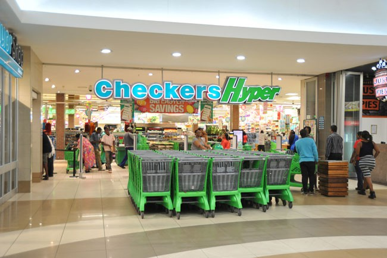
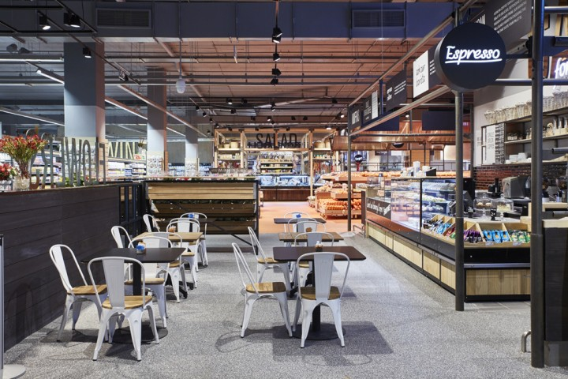

PICK N PAY
The Pick n Pay Group is a retail business in the fast-moving consumer goods industry. The Group operates through multiple store formats under three brands – Pick n Pay, Boxer and TM Supermarkets.
Pick n Pay also operates one of the largest online grocery platforms in sub-Saharan Africa. Raymond Ackerman purchased the first four Pick n Pay stores in Cape Town, South Africa, in 1967.
Since then, the Group has grown to encompass stores across South Africa, Namibia, Botswana, Zambia, Nigeria, eSwatini and Lesotho.
As of 2018, the company was operating over 1,600 locations across seven countries in Southern Africa. In that year's annual report, the company announced a planned expansion into Nigeria, and that it was considering expanding into Ghana. Pick n Pay also operates stores under the Boxer brand in South Africa and Swaziland.